Who: Theo Brooks, 15 (born June 2011). He likes maths competitions and runs a small maths club. He belongs to cohort C6, the Quest player ("Let me play.") in docs/member-home-plan.md. He arrives as a signed-out guest and signs up straight away, without playing first. He wants three things: an account that saves his scores, a space for his club, and a way into his school club's space with its code (RVRS2345). Then he wants to play something at his own level.
Outcome: 1/1 journeys passed, 0 skipped, 23 of 24 steps verified. The sign-up works and ends, as the platform's Post-approved access intends, on "Waiting for approval" (step 7). A day later, after the platform admin approved him, "Sign in" and one Google tap put him straight into his personal space, "Theo's space" (step 10). Both teen limits hold, as this journey expects:
Start a space: refused by a grey line on the Spaces page, "To start a space of your own you need to be 18 or
older." (step 13).
Adding club members to his own space: refused, but only after he had filled in the whole Add user form: "Adding
people to a space is for adults. Ask a parent to start a family space." (step 15).
Joining with a code: works for a teen. RVRS2345 finds "Riverside Tutoring", and "Ask to join" leaves a pending
request (step 18).
He then starts an AoPS Algebra quest and the first question is on screen (step 24). It is still there after a reload. Step 5 is only partly verified: the Terms page opened in a new tab that was not inspected.
Conversion figures (counted from the entry point):
Stretch
Screens
Taps
Inputs
Waits
Dead ends
Day 1: guest page to "Waiting for approval" (steps 1-7)
4
9
3 (month, year, terms box)
1 (the approval, open-ended)
0
Day 2: guest page to his home (steps 8-10)
3 (1 new: the home)
2
0
0
0
Day 2: the club attempts, Start a space and the code (steps 11-18)
5 new (menu, switcher, Spaces, Users, Add user)
14
3 (name, email, code)
1 (the join request, open-ended)
1 (Users > Add user)
Day 2: home to the first question (steps 19-24)
5 new (Level, Score Setup, Who plays?, Ready?, the game)
9
0
1 (a 3-second countdown)
0
Whole journey (steps 1-24)
15 distinct (23 views)
34
6
3
1
The shortest path from signing in to a question is 3 taps: Sign in, Continue with Google, a home tile. Theo did not take it, because no tile on his home was at his level. Through "New quest" it is 9 taps.
For conversion, the teen gets in, and the code works. But two open-ended waits (the platform's approval, then the club's admins) each end in silence. Nothing on screen says he will be told. His club has no way in at all: the "no" names no next step, such as asking a teacher or parent to start the space.
For stickiness, the hook is real: a competition-style AoPS problem on the first question. But it sits four wizard steps away. His home opens on Grade 1 and Kindergarten.
The 3 screens Theo would notice most:
Step 10, his first home. "Good afternoon, Theo" is warm, but the board below is "Today's Daily · Grade 1", a pink
grade-1 pill and "Quick 5 · Grade 1". The only level near his own is "Math 1" under More levels. For a 15-year-old who does competitions, this says "for little kids" before he has played once. step 10
Step 15, the club refused after the form. He is "Admin" of his space, so he tries Users > Add user for a club
member. The form lets him fill in roles, a name, an email and a growing "Student details" section. Only then does a red toast say adults only, and it points him to a "family space", which is not what a club is. He loses effort and trust on the one thing he came to do for his club. step 15
Step 24, the first question. "How many terms of 1+3+5+7+⋯ are needed to make a sum of 144?" This is the problem
a competition kid wants. It is the strongest reason he has to come back, and he reached it only through the New quest wizard.
The approval is silent, and Sign in opens Sign up free
Issue
The waiting screen (step 7) says only "Your access is waiting for approval. You can sign in once it's approved." It gives no time frame, does not say who approves, and does not say whether he will be told. On this run no message reached him: none is sent locally, and nothing on screen promised one. The next day the guest page (step 8) is exactly as before, with nothing to show that his account now exists or has been approved. Theo has to guess that "Sign in" is the way back. When he taps it, the sheet is titled "Sign up free", with "Keep your scores, unlock every quest and play with your family." (step 9), as if his sign-up had not counted. The approval does work: one Google tap puts him in his space (step 10).
Violation
cuj-contract, steps 7-9 (expected: told what happens next, then a sign-in screen; observed: no next step, then a sign-up sheet); Nielsen #1 Visibility of system status (an approval he cannot see); Nielsen #4 Consistency and standards (the "Sign in" button opens "Sign up free").
Severity
Classify: real friction at the journey's main conversion point, with no workaround needed (Sign in
works). For a teen who signed up on impulse, an open-ended wait with no word that he will be told is where the journey quietly ends. Nothing brings him back on the day he is approved. It is not a 3: when he does return, the path in is two taps.
Evidence
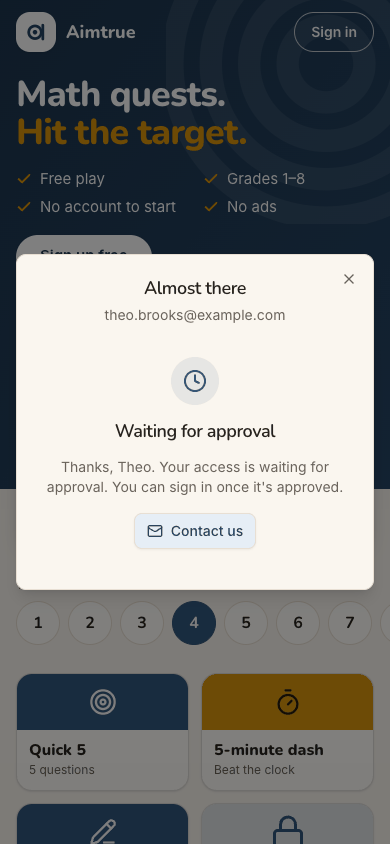
step 7step 8step 9 Repro: under Post-approved sign-up access, sign up as a new Google account and stop at "Waiting for approval". Approve the account in the console. Open / signed out in a new tab: the same guest page. Tap "Sign in": "Sign up free". J05 saw the same title on its step 15.
Fix
Waiting screen: add one sentence saying what happens next, for example "We'll email theo.brooks@… when you're in.
Most requests are answered within a day. Until then you can keep playing as a guest." Add a "Keep playing" button beside Contact us.
Approval: send the approval email (from the production pair, where email is set up).
Sign-in sheet: when the sheet is opened from "Sign in", title it "Sign in" with "Welcome back" copy. Keep "Sign up
free" for the hero button.
sev2
The home leads a 15-year-old with Grade 1 and Kindergarten
A grade row with Grade 1 selected (pink), then "Quick 5 · Grade 1".
Advanced: "Beast Academy 1".
More levels: Math 1 and Kindergarten (step 19).
The levels that fit a 15-year-old competition fan (Math 2, AoPS Prealgebra, Algebra and Geometry) appear only inside the New quest wizard (step 20). The Next up card's "Play today's 5" link points to the Grade 3 Daily (/quest/daily/NC26.3; read from the accessibility tree, not opened), while the board's Daily says Grade 1. So one screen offers two "today" quests at two different grades, neither of them his. His birth year is known at sign-up, but nothing asks his grade or level.
Violation
cuj-contract, steps 10 and 19 (expected: a home that leads with something at his level; observed: Grade 1 first, his levels only in the wizard); Nielsen #2 Match between system and the real world (the board's default does not match the person); Nielsen #4 Consistency (two "today" quests, two grades).
Severity
Classify: an observable mismatch with real friction for stickiness. For this cohort the first board
is the product's promise, and "Grade 1" tells a teen it is not for him. The workaround is to find New quest (step 20), so it is not a 3.
Evidence
step 10step 19
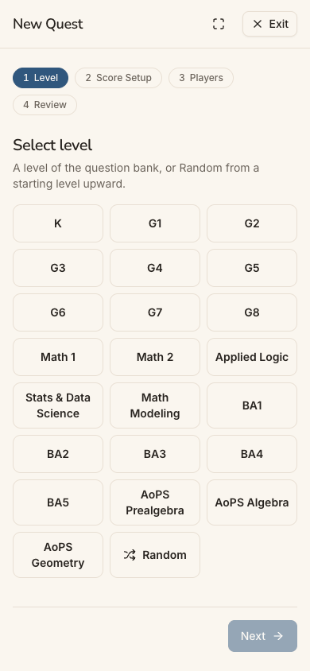
step 20 Repro: sign up as a new account born in 2011 without playing as a guest first, get approved, and sign in. The home board opens on Grade 1.
Fix
Ask once, on the first home of a personal space with no guest history: "What are you working on?" Offer grade
chips, plus Math 1 or 2 and AoPS, Kangaroo or competitions. Store it as the lead level that the guest's grade already feeds.
Until he answers, lead the grade row with a level near his age band (13-17: Grade 8 / Math 1) rather than Grade 1.
Make Next up's "Today's 5" and the board's Daily use the same level.
Show the competition levels (AoPS, Beast Academy 5) in "Advanced" for that band.
sev2
A teen admin is offered Add user and refused only after filling it in
Issue
In his personal space Theo is labelled "Admin" (step 12). His menu has Users and Space, and his home shows "Start an assessment · Student: Choose a student". Looking for a way to bring his club in, he opens Users > Add user (step 14). The full staff form opens:
roles Admin, Student and Parent;
Full name, Email and Phone;
after ticking Student, a parent section, Student details and a parental-consent box.
Nothing says a teen cannot use it. Only when he submits does a red toast say "Adding people to a space is for adults. Ask a parent to start a family space." (step 15, a 403). The advice points to a "family space", not to his club.
Violation
cuj-contract, steps 14-15 (expected, for the persona: a way to add club members, or a clear "not for you" before the effort; observed: the form, then a late refusal); Nielsen #5 Error prevention (the error is allowed to happen after the work); Nielsen #8 Aesthetic and minimalist design (admin tools a teen cannot use are on his menu and home).
Severity
Classify: real friction and a dead end. The refusal itself is right and expected, and nothing is
saved. But a teen fills in another person's details and is told no only at the end. The "family space" advice does not fit a club. Not a 3: he backs out with Cancel and loses nothing else.
Evidence
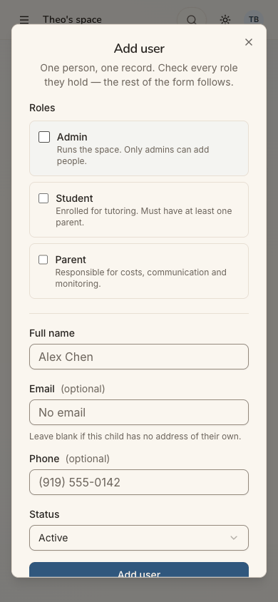
step 14step 15 Repro: as an approved 13-17 account in his personal space, Menu > Users > Add user. Tick Student, type a name and an email, and tap Add user. The toast shows; the console shows 403 POST /api/users.
Fix
In a teen's personal space, hide Add user. Better, hide the Users and Space items and the "Start an assessment"
student picker too, and keep "Show your work" for himself.
If Users stays, replace the Add user button with one line, the same message the refusal gives: "Adding people is
for adults. To play with your club, ask a teacher or parent to start a space and share its code."
Don't label him "Admin" of a space of one: "Just you" or "Personal" says what it is.
sev2
The no to Start a space is a grey footnote with no way forward for a club
Issue
Theo finds no "Start a space" in the menu (step 11). The switcher offers only "All spaces" (step 12). On the Spaces page the answer is a line of small grey text under the code box: "To start a space of your own you need to be 18 or older." (step 13). It has no button and no alternative. It does not say that an adult (teacher, parent, club sponsor) can start one and give him its code, though the code box right above is exactly how he would then join. It does not say that he can play multiplayer games from his own space.
Violation
cuj-contract, step 13 (expected for a teen: a refusal that says what he can do instead; observed: refusal only); Nielsen #9 Help users recognize, diagnose, and recover from errors; Nielsen #10 Help and documentation (no pointer to the club route).
Severity
Classify: the refusal is expected and correct (a pass for this journey), but it ends his club goal
with no next step. That is a lost conversion for exactly the people who would bring a group in. Not a 3: no end state is wrong.
Evidence
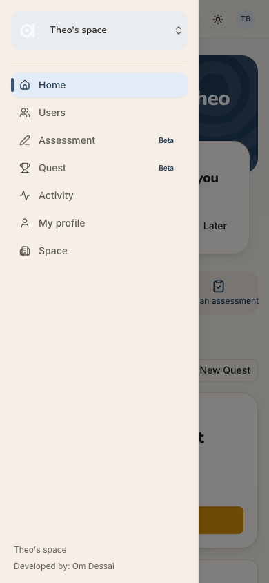
step 11
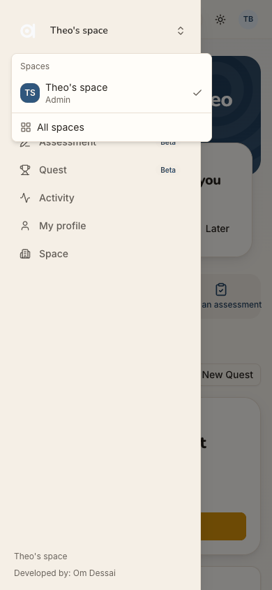
step 12
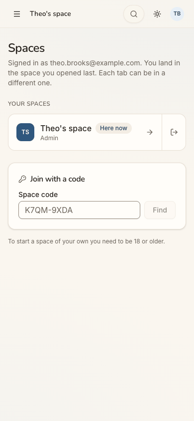
step 13 Repro: as an approved 13-17 account, Menu > the space switcher > All spaces.
Fix
Turn the footnote into a small card: "Running a club? Spaces are started by an adult: ask your teacher or a parent
to start one at <link>, then join it with its code above."
Add a "Share this with an adult" action (the same share-or-copy pattern as "Under 13? Ask a grown-up").
Add a pointer to "Play with friends: start a multiplayer quest and share its code", if friends outside his space
can join one (not checked here).
sev2
The guest page and sign-up speak only to families and young children
Issue
The guest page (steps 1 and 8) promises "Grades 1-8". It preselects Grade 4 and ends with "Questions from grown-ups" ("Is it safe for my child?") and "Create a free family space". The sign-up sheet says "play with your family" (steps 2 and 9). Nothing names high-school courses, competitions (AoPS appears only as "Adv G4"; Kangaroo is not mentioned), friends or clubs. A 15-year-old has to look past the copy to believe the product is for him.
Violation
cuj-contract, steps 1-2 (expected: a reason for this persona to sign up; observed: copy aimed at parents and young children); Nielsen #2 Match between system and the real world.
Severity
Classify: real friction at the first impression, the conversion point for the 13-17 band. Theo signs
up anyway because "Save your scores and unlock every quest" is enough, but a less motivated teen would not. No workaround is needed.
Evidence
step 1step 2 Repro: open / signed out on a phone.
Fix
Add a tick or a line for teens: "Grades 1-8, Math 1-2 and competition prep".
Name the advanced tracks in words: "AoPS Algebra", "Beast Academy 5".
Let the grade row reach "Math 1+".
Word the sign-up sheet for everyone: "play with friends and family".
sev1
Solo practice takes four wizard steps, with Multiplayer preselected
Issue
To play one level on his own, Theo goes through Level, Score Setup, Who plays? and Ready? (steps 20-23). That is 7 taps after New quest. On "Who plays?" Multiplayer is already selected, with teams of 4 and 10 teams, although Single player says "It starts straight away" (step 22).
Violation
cuj-contract, steps 20-23; Nielsen #7 Flexibility and efficiency of use (no shortcut for the common solo case).
Severity
Classify: cosmetic friction. Each screen is clear, the defaults are sensible, and he reaches the
question. A shorter path matters most for a returning player.
Evidence
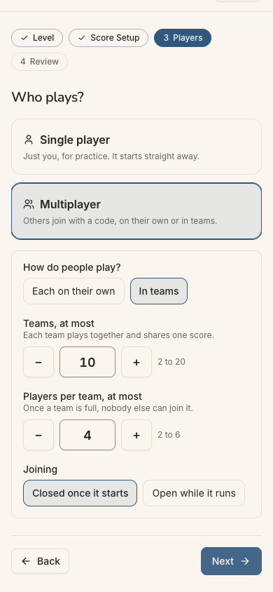
step 22
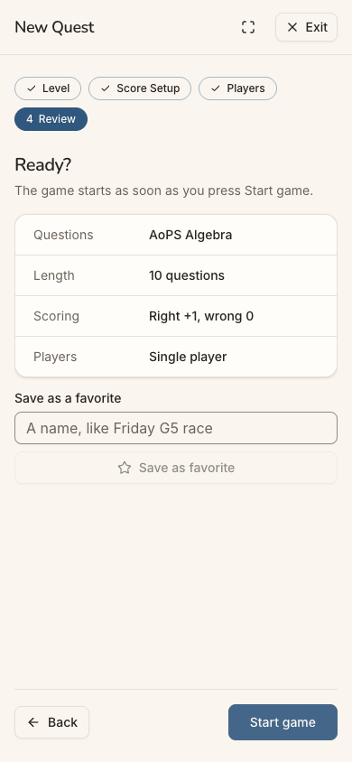
step 23 Repro: home > New quest > a level > Next > Next.
Fix
Preselect Single player. Offer "Play solo now" on the Level step once a level is chosen, using the default scoring, and skip Score Setup and Review. Keep the full wizard for multiplayer.
sev1
The join request cuts the space's name and says nothing of when
Issue
After Find, the match reads "Riverside Tutori…", cut off on a phone, with an "R" avatar and nothing else (step 17). Theo cannot confirm that it is his school club before asking. After "Ask to join", "Asked just now. Its administrators will let you in." (step 18) does not say when, or whether he will be notified. As a teen, he is not told whether a parent has to be involved.
Violation
cuj-contract, steps 17-18; Nielsen #1 Visibility of system status.
Severity
Classify: small but real uncertainty. The request itself works, and he can withdraw it.
Evidence
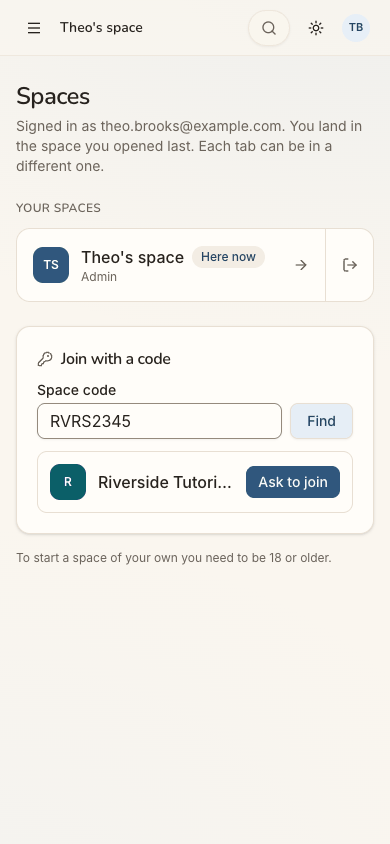
step 17
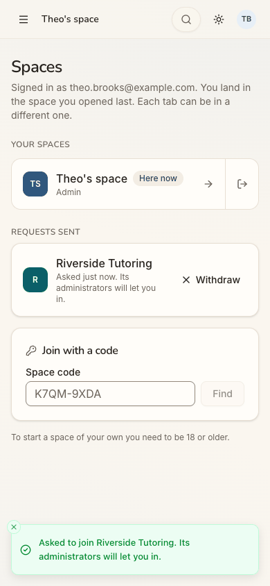
step 18 Repro: Spaces > Space code RVRS2345 > Find > Ask to join.
Fix
Let the match wrap to two lines. Add one identifying detail (the space's town or its admin's first name, if
shareable).
After asking, say "You'll see it here and on your home when they let you in" and, where email is on, "and we'll
email you".
sev1
The waiting dialog shows two headings and a personal Gmail contact
Issue
The waiting state keeps the form's title "Almost there" above its own heading "Waiting for approval" (step 7). Its only button, "Contact us", opens an email to a personal Gmail address. The menu footer's "Developed by: Om Dessai" link goes to the same address.
Violation
cuj-contract, step 7; Nielsen #4 Consistency and standards.
Severity
Classify: cosmetic. The message is clear enough, but the mixed title and a personal address make
the product look less official to a teen and to the parent he might show it to.
Evidence
step 7 Repro: complete sign-up under Post-approved access.
Fix
Retitle the dialog "Waiting for approval" once it reaches that state. Point Contact us at a support address on the product's own domain.
sev1
The age form talks about 18 and starts its year list at 2026
Issue
"Only whether you are over 18 is kept, never the date." (step 3) is the only age note a 15-year-old sees. It makes him wonder whether being under 18 is a problem, and it does not say what a 13-17 account can or cannot do (start a space, add people). The Year list opens at 2026, so he scrolls past fifteen years to reach 2011 (step 4).
Violation
cuj-contract, steps 3-4; Nielsen #2 Match between system and the real world; Nielsen #7 Flexibility and efficiency of use.
Severity
Classify: cosmetic friction. He completes the form in seconds.
Evidence
step 3
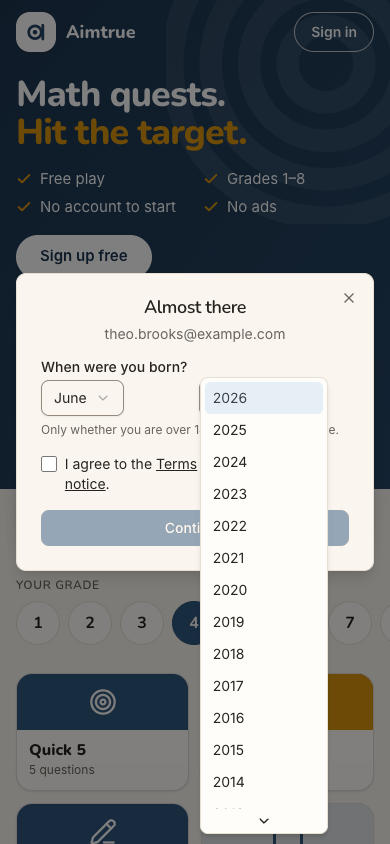
step 4 Repro: sign up as a new account and open the Year list.
Fix
Reword it as "We keep only your age band, never the date", which is true for every band. Start the year list at the youngest year allowed (13 years ago), or let the year be typed.
Walkthrough
Step 1 — Open http://localhost:8797/ signed out (landing) Expected: the guest page and a way to sign up. Observed: match. The guest Play home shows "Math quests. Hit the target." with Free play, Grades 1-8, No account to start and No ads, then "Sign up free". Below are Today's 5 (Grade 4 preselected), the grade row, tiles (three locked "Free account"), Advanced "Adv G4", "One code, everyone joins", and "Questions from grown-ups". Desktop and dark mode carry the same content and are readable.Step 2 — Tap "Sign up free" Expected: a sign-up screen. Observed: match. A centred dialog, "Sign up free: Keep your scores, unlock every quest and play with your family.", with one "Continue with Google" button and a close X.Step 3 — Tap "Continue with Google" Expected: Google, then a short form about him. Observed: match. The dialog becomes "Almost there" with his email, then "When were you born?" (Month and Year), "Only whether you are over 18 is kept, never the date.", the terms box and a disabled Continue.Step 4 — Month: June; open the Year list and pick 2011 Expected: pick his birth month and year. Observed: match. The Year list starts at 2026; 2011 is the 16th row, below the list's fold.
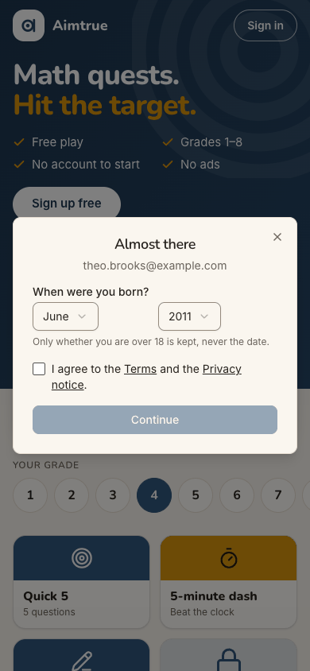
Step 5 — Tap the "Terms" link before ticking Expected: see the terms without losing the form. Observed: partly verified. The link opens a new browser tab, and the form keeps June and 2011. The terms page itself was not inspected (see Coverage).
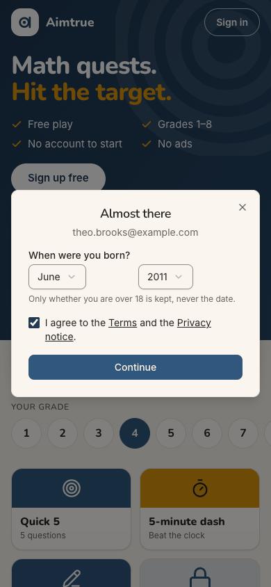
Step 6 — Tick "I agree to the Terms and the Privacy notice." Expected: Continue becomes active. Observed: match. Continue turns dark blue.Step 7 — Tap "Continue" (landing) Expected: under Post-approved access, "Waiting for approval". Observed: match. The dialog is still titled "Almost there", with a clock icon and "Waiting for approval: Thanks, Theo. Your access is waiting for approval. You can sign in once it's approved." Its one button, "Contact us", is a mailto to a personal Gmail address. POST /api/auth/signup answered the designed 403. That is the end of day 1.Step 8 — A day later: new tab, open / signed out (landing) Expected: the guest page, with a way to sign in. Observed: match. The page is identical to step 1, with "Sign in" at the top right. It shows no trace of his sign-up or approval.Step 9 — Tap "Sign in" Expected: a sign-in sheet. Observed: mismatch. The sheet is titled "Sign up free", with "Keep your scores, unlock every quest and play with your family." and Continue with Google, the same as step 2.Step 10 — Tap "Continue with Google" (landing) Expected: approved, signed in, a home. Observed: match. He goes straight into "Theo's space": "Good afternoon, Theo", "0 of 3 days played this week", and Next up "Today's 5" with Play and Later. Below are New quest, Have a code? and Start an assessment, then "Your learning" with Today's Daily · Grade 1, the streak dots, "Next badge: First quest", and a grade row on Grade 1. The desktop menu has Home, Users, Assessment, Quest, Activity, My profile and Space. Dark mode is readable.Step 11 — Open the menu, looking for a way to start his club's space Expected (Theo): a "Start a space" or "New space" item. Observed: the drawer has the space switcher "Theo's space", then Home, Users, Assessment, Quest, Activity, My profile and Space. There is no "Start a space". On a phone the space mark at the top-left is white on a pale tile and barely visible.Step 12 — Tap the space switcher Expected: his spaces and a way to add one. Observed: "Spaces: Theo's space, Admin (ticked)", then "All spaces".Step 13 — Tap "All spaces" (landing) Expected: for a teen, Start a space refused. Observed: match. The Spaces page shows "Signed in as …" and YOUR SPACES (Theo's space, Here now, Admin). Below are the "Join with a code" card and, in small grey text, "To start a space of your own you need to be 18 or older." There is no button and no alternative.Step 14 — Wrong turn: Menu > Users > Add user, to add club members to his own space Expected (Theo): since he is Admin, perhaps he can add his club here. Observed: Users ("Everyone at Theo's space", just him), then the full "Add user" dialog. It lists the roles Admin ("Only admins can add people."), Student ("Enrolled for tutoring. Must have at least one parent.") and Parent, then Full name, Email, Phone and Status. Nothing says a teen cannot use it.Step 15 — Tick Student, type a club member's name and email, tap Add user Expected: either a way to add a club member, or a clear "not for you". Observed: the form grows to include a parent or guardian (required), Student details and a parental-consent box. On submit, a red toast says "Adding people to a space is for adults. Ask a parent to start a family space." (403). He taps Cancel. Dead end 1.
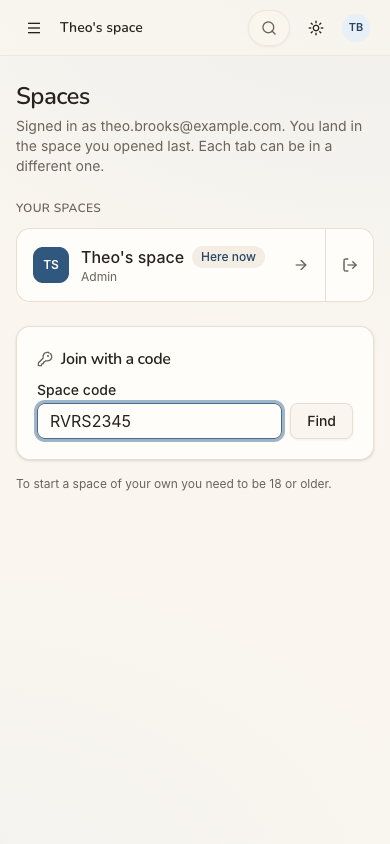
Step 16 — Back to Spaces (Menu > switcher > All spaces); type RVRS2345 Expected: the code box takes his club's code. Observed: match. RVRS2345 is typed, and Find becomes active. The placeholder shows a hyphenated code, and his code without a hyphen is accepted.Step 17 — Tap Find Expected: the club's space. Observed: match. A row shows an "R" avatar, "Riverside Tutori…" (cut off on a phone) and "Ask to join".Step 18 — Tap "Ask to join" (landing) Expected: a teen may ask to join. Observed: match. A toast says "Asked to join Riverside Tutoring. Its administrators will let you in.", and a new section, REQUESTS SENT, shows "Riverside Tutoring: Asked just now. Its administrators will let you in." with a Withdraw button. The request was left pending (not waited out).Step 19 — Menu > Home; scroll the board looking for his level Expected (Theo): something at his level. Observed: the board shows Quick 5 · Grade 1, Advanced Beast Academy 1 (Quick 5, 10-minute challenge), and More levels Math 1 (six tiles) and Kindergarten. There are no AoPS or competition tiles.Step 20 — Tap "New quest" (landing) Expected: a way to choose his own level. Observed: match. A full-screen "New Quest" wizard with four steps (Level, Score Setup, Players, Review). "Select level" offers K, G1-G8, Math 1, Math 2, Applied Logic, Stats & Data Science, Math Modeling, BA1-BA5, AoPS Prealgebra, Algebra and Geometry, and Random. Next stays disabled until he picks one.
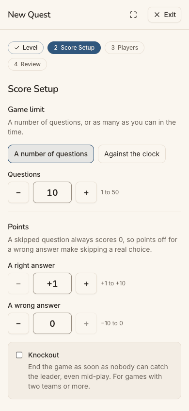
Step 21 — Tap AoPS Algebra, then Next Expected: the next step. Observed: Score Setup shows the game limit (10 questions, or Against the clock), points for a right answer (+1) and a wrong one (0), and Knockout ("for games with two teams or more").Step 22 — Tap Next Expected: choose solo play. Observed: "Who plays?" offers Single player ("Just you, for practice. It starts straight away.") and Multiplayer, which is preselected with teams of 4, 10 teams, and joining closed once the game starts.Step 23 — Tap Single player, then Next Expected: a summary and a start button. Observed: match. "Ready? The game starts as soon as you press Start game." The summary reads AoPS Algebra, 10 questions, right +1 and wrong 0, Single player. There is an optional "Save as a favorite" name, then Back and Start game.Step 24 — Tap "Start game" (landing; the journey's end) Expected: the first question on screen. Observed: match. "THE QUEST BEGINS / Get ready" and "Go!" (about 3 s), then "QUESTION 1 OF 10 · Beta: How many terms of 1+3+5+7+⋯ are needed to make a sum of 144?", with an answer box ("A number, like 12, 3/4 or 2.5"), Submit, Skip, End the game now, and Scores showing Theo (you) 0, 0/10. The phone header says "Game"; the desktop header says "Quest game · AoPS Algebra". After a reload the same question 1 of 10 is on screen, with score 0.
1 / 24
Appendix
Mode: live. The web app at http://localhost:8797 is a frozen copy of commit 2d6e7d3 with sign-in on. It was
driven in headless Chrome at 390×844 (phone), plus 1280×800 and dark mode at the landing steps (1, 7, 8, 10, 13, 18, 20 and 24). The journey ran in two stages a "day" apart in one browser profile: steps 1-7, then steps 8-24 in a new tab.
Frameworks applied:
cuj-contract: every step against its expected result.
task-completion: the journey ran to its defined end, the first quest question, and the space and code attempts
were recorded.
success-criteria: the end state was checked again after a reload at step 24, with the same game and question 1 of
10 on screen.
CUJ manifest: J04, 24 steps. Verified: steps 1-4 and 6-24 (23). Partly verified: step 5 (the form kept its
answers; the Terms page was not inspected). Observed and not matching expectation: step 9 (Sign in opens "Sign up free"). Steps 13 and 15 are refusals this journey expects (passes).
Errors seen:
401 GET /api/auth/session on each signed-out load (expected);
403 POST /api/auth/signup at step 7 (the designed access_pending);
403 POST /api/users at step 15 (the teen refusal; submitted twice, the second time only to capture the toast in
the screenshot).
There were no other console errors.
Coverage / not inspected:
The Terms and Privacy pages' content: they open in a new tab that the driver does not follow.
The "Contact us" mail client, and any email at all. Nothing is sent locally, so whether production emails Theo on
approval, or when the club's admins let him in, was not checked.
What Riverside Tutoring's admins see of Theo's request, and whether a 13-17 request is treated differently. The
request was left pending in the local database, not withdrawn.
Whether club friends outside Theo's space could join a multiplayer quest he starts (Multiplayer was not tried).
The Next up "Play today's 5" (its link targets the Grade 3 Daily, read from the accessibility tree) and the board's
Daily: neither was opened.
The home's "Have a code?" quick action: the Spaces page's code box was used instead.
Answering the question and the rest of the game. The journey ends at the first question.
Make this my home, Assessment, Activity, My profile and the Space page: not opened.
Keyboard-only and screen-reader use. The accessibility tree was read only to find controls.
The iOS app: it is covered by separate journeys.
Other sign-in providers: not offered on the production web.
Access: through the app's real sign-in and sign-up screens; the Google provider step is simulated (a stand-in for
Google's button hands the app a local test token for the persona).
Preconditions made outside the UI:
The platform admin approved Theo's pending account between the two stages, outside this journey's browser.
The run's platform settings (web sign-in Google only with sign-up open, sign-up access Post-approved, guest play
and the Daily on) and Quest switched on in riverside (whose space code is RVRS2345) were set before the journeys, as docs/userjourney/README.md "The run" records.